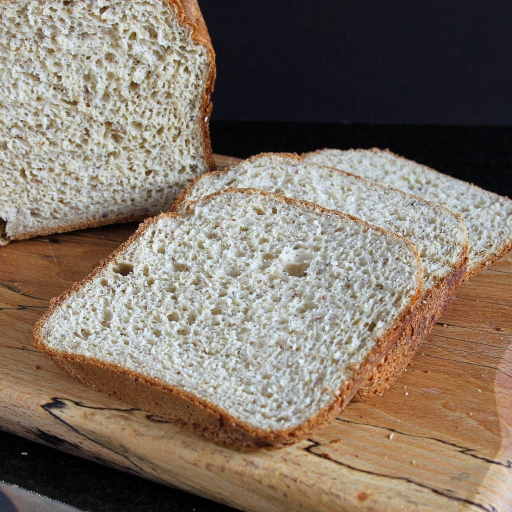

Blender Rice Bread

Description
Easily made rice bread using blender.
Ingredients:
- 3 cups soaked rice
- 1/4 cup oil or butter
- 2 tablespoons sugar
- 2 1/4 teaspoons yeast
- 1 1/2 teaspoons kosher salt
- 1 cup water
Directions:
- Spray loaf pan with nonstick spray. Add all ingredients to high-speed blender.
Have thermometer available. Blend on high for approx. 60 to 75 secs until batter reaches
temperature of between 100℉ to 110℉ for yeast to rise.
- Pour batter into prepared loaf pan. Allow bread to rise away from drafts for 20 to 30 minutes.
- Add baking sheet to lower oven rack. Preheat oven with baking sheet to 325℉.
Fill a cup with water. When bread has risen, place loaf pan on rack above
baking sheet and add water to baking sheet to create steam.
- Bake for approx. 25 mins.